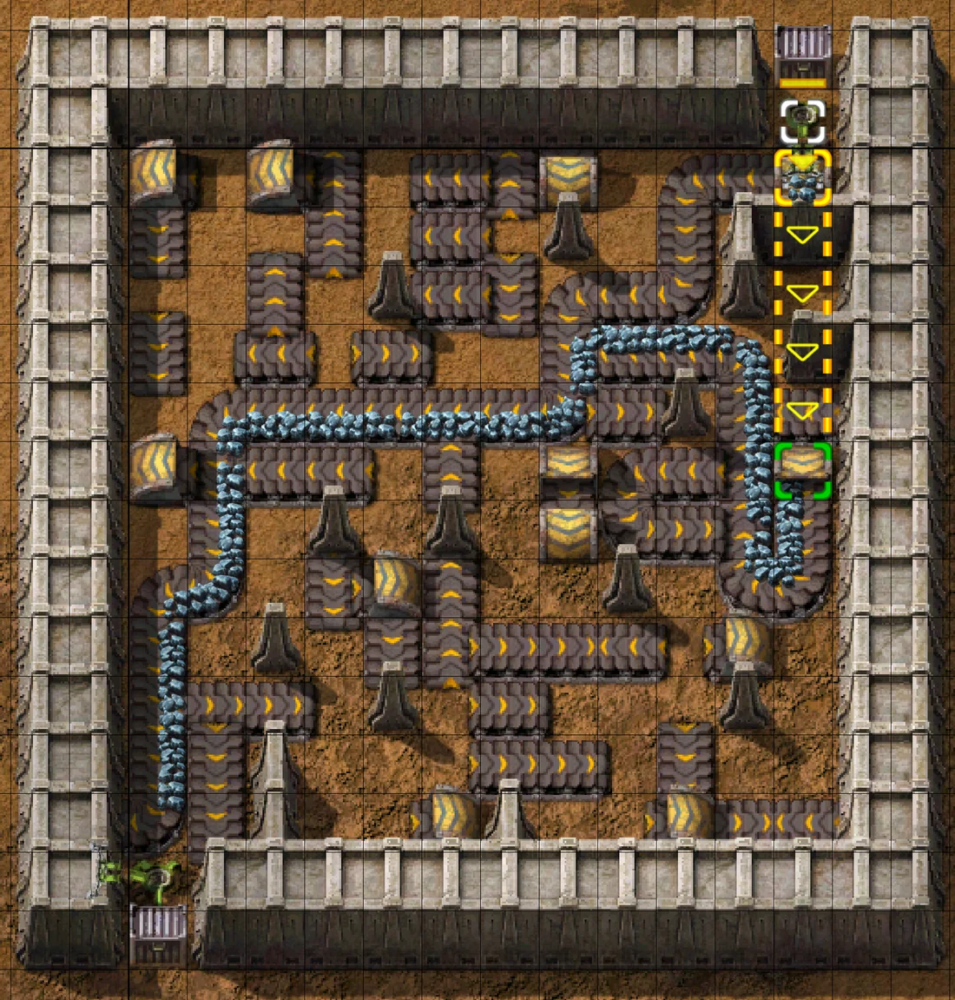
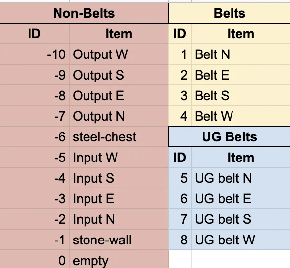

Factorio, Live: a Game as an Optimisation Benchmark
Factorio is a game I've loved since it was released. It's my most-played game on Steam, and there's something so deeply satisfying about playing a game all about optimization, exploring and solving problems. When I started thinking about the psychology behind this, I realized that video games, puzzles, board games and the like mirror a satisfaction I find when programming, conducting research and solving real-world problems. It scratches an itch in a particular way unfound in other walks of life: defeating challenges beyond a grind in an RPG, lifting a heavier weight at the gym or accomplishing projects based more on time than difficulty. It's the slow accrual of problems solved into a portfolio of solutions working in tandem, so you can zoom out to the map and say "look at my base! it's a bit of a mess, but it's mine, and I love it."
I decided to bridge the gap between the video game and the research, both of which scratched that itch in my mind. I brought up the idea with one of my supervisors at Michigan State University (MSU) at the time, Prof. Wolfgang Banzhaf. He thought it sounded interesting, and liked my point that a video game is a better teaching instrument than a textbook, since this visually shows success and failure, and the mechanics of individual algorithms live in front of you. He said I should go for it, so I enlisted a couple of my colleauges (now co-authors) and we worked on it together.
Quick jargon guide
- Operational research: the study of running things well: what to build, where to put it, and in what order.
- Throughput and bottleneck: how much gets through per second and what component causes a trickle for the rest of a system.
- Transport belt: the conveyor that moves items in Factorio. Its capacity is fixed, so a longer route costs time, not bandwidth.
- Underground belt: a pair of entry and exit tiles that carries items beneath obstacles, up to four cells apart. It's kind of like teleporting that takes the same amount of time as a normal belt.
- Metaheuristic: a search that improves a solution by trial and feedback rather than solving equations. Simulated annealing and genetic algorithms are both in this family.
Watch it lay the belts
A cell holds one object: a belt facing one of four directions, an underground entry facing one of four directions, or nothing. Undergrounds pair with the next matching exit within four cells, which is how a solution ducks under an obstacle. Fitness is the paper's weighted sum of items delivered and items accepted, so a belt that starts at the chest and dead-ends still scores something: without that the search would be hunting for a single winning configuration with no gradient to follow. Switch between the two optimisers on the same instance and watch how differently they get there.
Two places this demo is not the paper
The scoring here is not identical to the published version. The paper scored a candidate by running it in the game, which returns nothing at all until the route lands. That cliff is survivable for a method that lays whole paths in one move, and hopeless for one that edits a single cell at a time: annealing would sit at zero for thousands of evaluations and look broken. So the demo adds partial credit for reaching further east, and a small bonus for using fewer belts once connected. It is a shaped objective, and shaped objectives can be gamed, so this is really just for demo purposes, not a realistic solution (mostly since "east" isn't always the goal).
The second departure is in how annealing picks what to change. The paper varies its neighbour selection with iteration progress. Here, two thirds of edits are at the frontier, meaning the cell where the current route gives up. The reason is arithmetic: on a twelve by twelve grid, a uniformly chosen cell is almost always somewhere the route never reaches, so most edits are invisible to the score and the search spends its budget rearranging scenery. Both changes exist to make the comparison fair to annealing, which is the direction a bias should run if you are going to have one.
So: this is a pretty and intentionally non-representative demo of the paper.
What the paper actually did
The paper behind this is The Factory Must Grow: Automation in Factorio, written with my co-authors Iliya Miralavy, Stephen Kelly, Wolfgang Banzhaf and Cedric Gondro, and presented at GECCO in 2021. The starting point was that Factorio is a factory simulator that has already done the expensive part of building a benchmark: it has consistent physics, a fixed belt throughput, and a community of players who have spent years discovering what good layouts look like, so how would our algorithms fair?
We defined the logistic transport belt problem formally, as an integer program with hard constraints on what can occupy a cell and how underground pairs must line up, and two soft constraints to be maximised: items delivered to the receiver, and items accepted from the chest. Then we built the 'Factorio Optimizer Interface', which uses the game's Lua modding hooks and the RCON protocol to place a candidate layout in a running Factorio server and read back how many items the input inserter took and how many reached the output chest. Because it talks over a socket and reads matrices from disk, the optimiser can be written in anything: ours were in Java, Python and C++. The evaluation function is the game itself.
Three optimisers were compared on six instances, being three grid sizes at three by three, six by six and twelve by twelve, each with and without obstacles. Parallel simulated annealing, a genetic programming system whose operators place and connect belt runs rather than editing cells, and an evolutionary reinforcement learning approach. The small instances are solvable by anything. The twelve by twelve with obstacles is where things really got interesting.
Genetic programming did well here because its operators speak the language of the problem: laying a run of belts and connecting two points are single moves, so one step of the search covers ground that costs annealing a long chain of individually pointless edits.

The model
Section 4 of the paper states the problem formally. Two hard constraints, two soft ones, and a pair of binary decision variables. Throughput, routing and flow is absent, for a reason I will come back to.
A position \(p\) is a coordinate pair in the grid. Directions are \(d \in \{0,1,2,3\}\), meaning north, east, south and west. Belts and underground belts are drawn from \(L_b\) and \(L_u\), and \(\phi_p\) is 1 when position \(p\) holds an obstacle and 0 otherwise. The decisions are whether to place a given belt type, at a given position, facing a given way:

The objective maximises the sum of the two soft constraints, each a parameterised item count scaled by a weight (not as in how heavy it is, but a weighting as in scaling), where \(o\) is the number of items output and \(i\) the number input:
HC1 allows a position to hold one logistic object or one obstacle, never both and never two. HC2 requires at least one item to be placed at all. A solution failing either scores zero; otherwise fitness lands between 0 and 1.
HC1 is the constraint that makes this combinatorial. Every cell you spend is a cell you cannot spend on anything else, and the obstacle term means the grid's difficulty is set before the search starts. HC2 exists to rule out the empty solution, which would otherwise be feasible and uninformative.
There is no flow conservation here, no belt capacity, no constraint saying a route has to connect. The underground pairing rule, the one that requires an entrance and exit in the same row or column, facing the same way, at most four cells apart, is described in the paper as a property of the game rather than written as an inequality.
All of that is missing because the model does not evaluate solutions. The game does. A candidate is built in Factorio through the interface, run, and scored on what the receiving chest actually contains, so the physics stays where it already worked instead of being restated as constraints that could disagree with it. That is the paper's real trick, and it is why the formal model can afford to be four lines long.
It also explains the weights. With \(w_2 = 0\) the objective would count only what arrives, and every layout that fails to connect would score identically at zero, leaving a search no way to tell a near miss from an empty grid. Because \(SC_2\) pays for items merely taken out of the input chest, a belt that starts correctly and dead-ends still earns something. That is a modelling decision rather than an algorithmic one, and it is the difference between a landscape a local search can climb and a cliff it cannot.
The niche
Optimisation research runs on benchmark sets, and benchmark sets have a known failure mode: they get old, methods get tuned against them, and after a decade you cannot tell whether a new result is progress or overfitting to a fixed library of instances. Games are an interesting escape from that, because a game that people play is a simulator someone else has already paid to build, validate and keep interesting.
Factorio is a good one for the specific reason that its difficulty is combinatorial rather than reflexive. Nothing here depends on reaction time or hidden information., like many games: it is placement under constraints, with a throughput number at the end, which is the same shape as facility layout, circuit routing and warehouse design in real life. It also comes with something no synthetic benchmark has: a large population of humans who have independently optimised the same problem for fun, and whose solutions you can compare against.
This is one problem inside one game, with a single objective and an evaluation function that a commercial studio can change in a patch. A benchmark you do not control is a benchmark that can be revised out from under your published results. And the community solutions that make it appealing are also a contamination risk, since a method tuned by someone who knows the good patterns is not discovering them. Games are a useful source of problems, not a replacement for the discipline of saying what your benchmark can and cannot show.
Common questions
Is this really operational research, or just a game?
Why not both? Strip the graphics and what remains is a constrained routing problem: place components on a grid, respect adjacency and pairing rules, maximise throughput. The same integer program describes it whether the output is rendered as a conveyor or as a line in a warehouse plan. The game is the interface, not the problem.
Why not just solve it outright?
You can, up to a point. The small grids are well within reach of an exact solver, and where an exact answer is available it is the right thing to use, because it comes with a proof. The difficulty is that the search space grows with both the grid area and the number of things each cell could be, and the underground pairing constraint links cells that are not adjacent. Past a certain size you are choosing between a guaranteed answer you will not receive today and a good answer you can have in seconds, which is the situation metaheuristics exist for.
Does the demo run the real game?
The demo in this site does not. The paper drove the actual game through an interface and measured real throughput. The demo reimplements the belt mechanics in JavaScript, because running thousands of evaluations in front of you requires an evaluation that takes microseconds rather than seconds. The mechanics modelled here are the ones the problem turns on: belt direction, underground pairing and reach, and items moving at a fixed rate. Everything else about Factorio is absent.
Why is genetic programming so much better here?
Because its moves are the right size. Connect lays a whole run of belts in one operation, where annealing changes a cell and asks whether that helped, and most single-cell changes to a broken route help by nothing at all. Given the same budget of four thousand evaluations on the twelve by twelve grid, the population method connects on five runs out of five and reaches a fitness around 0.82, while annealing connects on three and sits near 0.66. The gap in tidiness is starker than the gap in score: annealing arrives with roughly 88 belts on the board against 28, because it has no move that removes a redundant detour once the route works. That's not to say annealing is a weak algorithm. It says the operator matters more than the acceptance rule, which is the same conclusion the paper reached and the reason the comparison is worth running at all.
References
- Reid, K. N., Miralavy, I., Kelly, S., Banzhaf, W., & Gondro, C. (2021). The Factory Must Grow: Automation in Factorio. Proceedings of the Genetic and Evolutionary Computation Conference Companion. https://arxiv.org/abs/2102.04871